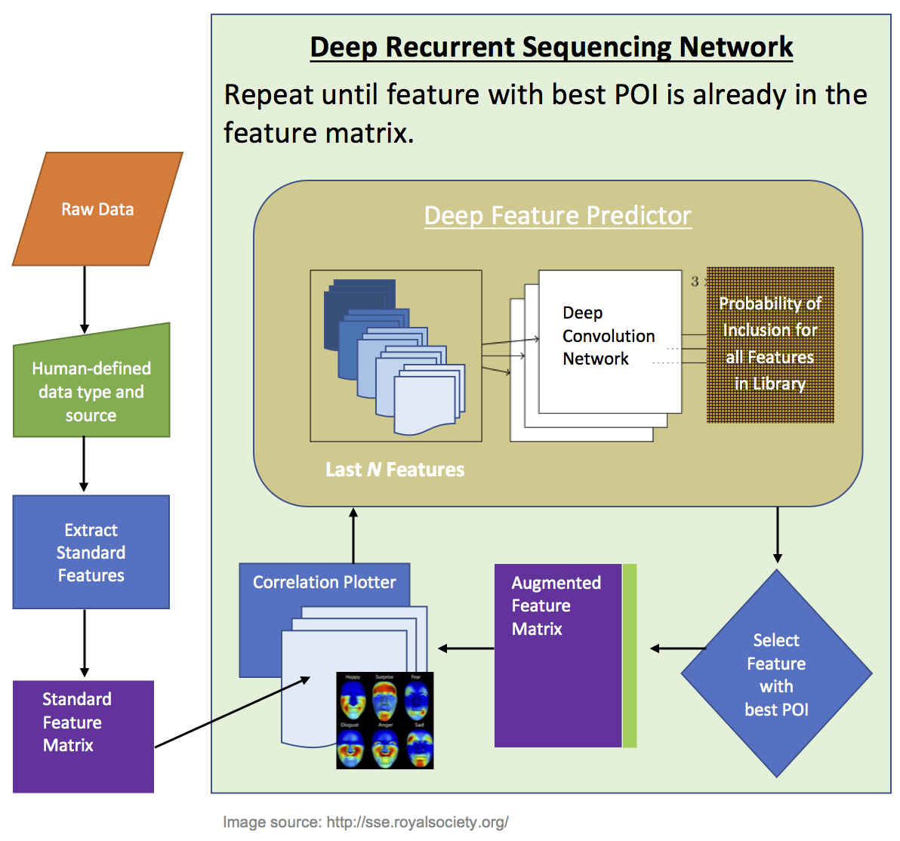

Project Overview¶
Note
the Super AI project is part of the afx python project. That is because generalized AI is already an enormous goal, and “Super AI” seems even better than that. Actually, this project is just an Automated Feature eXtractor (AFX), so that is what the package is called.
The biometric data collected by the Medic toilets provides an extraordinary opportunity to leverage data science in the prevention, treatment and detection of disease. While the prospects are excellent, thousands of machine learning (ML) models need to be generated to make full use of them. For example:
- Forbes reports that Medicaid uses over 140,000 diagnosis codes. A separate ML model could conceivably be created to predict probabilities for each of these diagnoses. While there would only be a few hundred that are most impactful, even a few hundred is still a mountain of work.
- The diagnosis decision tree database connects approximately 500 questions in a graph format to try and diagnose about 7,000 diseases. Instead of relying on the existing, simple yes/no model for the decision tree branches, we want to generate ML models that take the full spectrum of a user’s biometrics into account and provide probability weighted branches between questions. This contributes many thousands of additional models.
- If we can successfully implement the drug coding project, we can look for 1) contraindications between multiple drugs taken simultaneously; 2) efficacy of prescribed drugs; 3) other correlations between biometric changes and drug intake. In 2015, 51 new drugs were approved by the FDA. The total number of drugs in production is in the hundreds. Including combinations of drugs taken together, this represents many thousands more models that could be trained.
Since human resources are extremely limited and costly (compared to computation time), we are interested in developing a Super AI that can learn how to build ML models for arbitrary input data. The AI will be taught using every useful, publicly available ML model solution from competition sites such as Kaggle, as well as other publicly accessible websites.
If successful, we could parallelize the algorithm across many machines and automatically produce new models for many of the above cases with no human interaction (outside of approving the models for beta, and then production use). There will inevitably be models that cannot be trained by the initial Super AI; these data problems would be passed off to humans to figure out, and the resulting method would be added to the training set for the Super AI so that the next version would be able to reproduce a model for data with the same quirks.
This document outlines the procedure for constructing Super AI and introduces specifications for encoding the data that will ultimately become the training data for the Super AI model.
Because the Super AI is training as a replacement for humans, we would like its methods to follow human decision making processes as closely as possible. For a typical data science problem, humans will follow these steps:
- Examine the raw data and see if it has any visible correlation to the target labels. This involves plotting correlations between the data and the targets.
- Apply standard transformation and feature extraction routines to the raw data.
- For each feature, look at correlation plots to determine if the feature is
worth keeping. Using the correlation plots, the human decides which
additional features may be useful by:
- Incorporating background knowledge about the source of the data.
- Using knowledge of the correlation structure in the standard features.
- Including features from similar datasets that they have learned in the past.
- Trial and error.
- The process in #3 is repeated until a feature matrix is built that represents the data well with respect to the target being learned.
Apart from #4a, all these steps could be automated by a machine if the data is stored in the correct format. For #4a, some careful treatment, generalization and abstraction of data sources and feature extractors is necessary. A human could perform this abstraction with some thought so that datasets are presented in a consistent framework to the machine.
For example, a human could specify additional features to include in the initial “standard feature set”. By default, Super AI would just use the default standard feature set. However, in cases of failure, a human could further characterize the dataset by specifying these “seed features”.
Super AI Workflow¶
Given an arbitrary dataset:
- A human identifies the data type and the abstract source of the data.
- Super AI calculates the feature matrix for all standard features in the feature library. These are sorted by name.
- For each standard feature and raw data dimension, calculate a set of correlation plots, one for each unique correlation plot type.
- In sets of 5 or more (LSTM memory parameter) combine correlation images of the same type into a single, large image (order preserved).
- Using the Deep Feature Predictor (DFP) described below, predict probabilities of inclusion (POI) for every other feature in the library using the large image in #4.
- Include the most probable feature. Produce correlation plots for it.
- Repeat 4-6 until the most probable feature is one already present in the feature matrix.
{kind=link}

Flow chart for the automated construction of the feature matrix with Super AI. Start with the standard features for the given data type, we enter a LSTM sequencing machine that uses correlation plots for the existing features and target labels to predict the probability of inclusion for every feature in the library. A Deep Feature Predictor will be trained for every new feature added to the library; thus, determining the next feature to add (i.e., the one with the highest probability of inclusion (POI)) involves predicting a POI with possibly hundreds of deep learning models.
Each model that Super AI works on will run from a configuration file that tells the AI which inputs to use, which targets to predict and which metrics to evaluate the models on. Whenever a model is completed, the AI will notify a human about the model, which inputs and targets it was using, and the values of the metrics for the best model it could produce.
Correlation Plots¶
The first hurdle to pass is the production of correlation plots for raw data and features. There are only a few kinds of correlation plot that typically appear in ML model construction. To this end, we will examine every available ML model and determine which plots the human generated to decide whether to include a feature or not. Using some abstraction, we will reduce these kinds of plots to a small number (<10) of plots that can be applied to any feature vector, or raw data vector. Additionally, each plot must:
- Have the same dimension (probably 1000 x 1000 or smaller depending on how much data we must learn).
- Have axes scaled to the same range (0, 1).
Basically, two data vectors with similar values should produce visually similar plots (pixel-wise, since the machine doesn’t transform pictures as well as humans do).
In order to deal with reordering of features in the sequencing machine, we will train the DFP machines using 1) every permutation of correlation images (i.e., data augmentation by switching the order of images in the image grid); or 2) an alphabetic orderding by feature name; or 3) something else. We need to wait until we have the full set of correlation plots to make a decision. Since the images will always be exactly upright (i.e., no rotations) and standardized in axes and positions, we won’t have problems with having to learn rotated versions of images for classification.
Feature Relevance Extraction¶
In addition to standard and specialized feature extraction routines (see next section), we will also apply the relevance extraction routines suggested by Mueller et al. to produce “heat maps” of the important sections of correlation plots. These can be included as additional features for the DFP machines: in addition to the raw correlation plots, we will also present corresponding relevance plots for each correlation to show which sections of the image were considered important. This increases the discriminative abilities of the correlation between feature inclusion and data correlation with the target label.
When DFP machines are trained, they will initially start with the raw correlation plots. After the first training, relevance heat maps will be generated for each correlation plot, and then a new DFP will be trained. This process is repeated iteratively until convergence.
The trained DFP is used to produce heat maps for new correlation plots as part of the POI prediction.
Feature Library¶
The feature library is built with python ports of every feature that was ever extracted from raw data in any publicly available ML model. Each feature added to the library will include:
- Full API documentation for use by humans in developing ML models.
- 100% unit test coverage (for functions that aren’t in existing packages).
- JSON documentation describing the function to Super AI.
The JSON documentation will have the following format:
1 2 3 4 5 6 7 8 9 10 11 12 13 14 15 16 17 18 19 | {
"globally-unique-feature-name": {
"dtype": "signal",
"source": "biomechanics",
"std": true,
"params": {
"p1": [0.0, 1.0],
"p2": [true, false],
"p3": "int"
},
"defaults": {
"p1": 0.5,
"p2": true,
"p3": 12
},
"returns": "vector",
"fqdn": "medic.transforms.scattering.scatter1d"
}
}
|
- dtype: describes the human defined data type. Should be one of [“scalar”, “vector”, “matrix”, “tensor”].
- source: where the data was obtained from; this is necessary as part of the abstraction process for raw data. For example, a signal is just a list of numbers; however, if we know it was generated by biomechanical sources, some features may apply that are not useful for a generic signal that might represent a voice recording (for example). Should be one of [“sensor”, “sound”, “biomechanics”, “image”, “property”], though the list may be augmented from time to time.
- std: (bool) when true, this is a standard feature for the given dtype and source.
- params: dict listing the parameters that the feature extracting function accepts as well as their typical range of values (or a list if it is a finite set of choices).
- defaults: describes the default parameter values for each keyword argument in params.
- returns: dimensionality of data returned by the feature extractor. If it is not scalar, the framework assumes that each component is intended to be its own feature. The result is flattened to produce a standard feature vector. Should be one of [“vector”, “scalar”, “tensor”, “matrix”].
- fqdn: full import name for the function; if the feature needs to be run on new, raw data, this is where it is imported from.
NOTE: the function listed in FQDN must be self-contained. If there are free parameters, then the function should internally use heuristics to determine the values for those parameters. However, if a commonly-used function has two sets of common parameters (for example zero-padded FFT or non-padded FFT), these can show up as two separate features (e.g., “FFT-A”, “FFT-B”).
Dataset Compilation¶
While having a library of all useful features ever used in any model is itself useful for human development of models, it doesn’t provide a pathway to Super AI. Instead, we need the raw datasets of each trained model as well. Then we can manually apply the Super AI workflow to the raw data to produce:
- Correlation plots for each feature and all datasets to train the DFP models.
- A sequence of features to train the LSTM sequencing machine (outer loop).
Each human-made model that we reference will produce a single sample for the LSTM model building phase. Its feature matrix will be stepped over in batches of N to learn which feature to actually keep given a list of POI from the DFP machines. In order to facilitate the learning, we will rearrange the order of features in the original model’s feature matrix so that they match the POI wherever possible. Essentially, we want to put the feature vector into a format that the LSTM can reproduce based on the DFP interaction with the raw data at every sequencing step.
Documenting the Datasets¶
The raw data is also needed to train the Super AI model. We document each dataset using:
1 2 3 4 5 6 7 8 9 10 11 12 13 14 15 16 17 18 19 20 21 22 23 24 25 | {
"dataset-globally-unique-name": {
"URL": "http://this.is/where-I-got-it-from.html",
"inputs": {
"v1": {
"dtype": "signal",
"source": "sound"
},
"v2": {
"dtype": "tensor",
"source": "image"
}
},
"targets": {
"t1": {
"dtype": "float",
"source": "property"
}
},
"metrics": {
"log_loss": {"eps": 1e-12, "m_weight": "2*log(x)", "benchmark": 0.01},
"accuracy_score": {"normalize": false, "benchmark": 0.98}
}
}
}
|
- URL: where on the internet the dataset was found.
- inputs: dict of variable names that are inputs for the model; for each one, we also document its dtype and source according the specifications defined above for documenting features.
- targets: as for inputs, but for the target variables that the model is trying to predict.
- metrics: a list of the metrics that the models online used to determine
how good the model was with the dataset. This follows the regular naming
conventions for the
gmf.metrics.Metric.restore(), but also has an additional parameter benchmark that lists the value that the best models online were able to get. We use this value to determine how the Super AI is doing on public datasets.
Where to Next¶
To this end, whenever we visit any publicly available model, we will perform the following steps:
- Catalog every new feature that was extracted from the raw data (as described above).
- Catalog any new correlation plot types that were produced when the human decided to keep that feature. Reduce it to one of the common correlation plot types if possible.
- Save a copy of the raw dataset to an external drive (for now).
- Determine the data type and abstract source for the raw data.
Once we have a reasonable number of models (~30), we can start building the DFP and sequencing machine. We will likely have to go through a number of iterations before the algorithm for ordering the features in the training set is optimal.
NOTE: if a dataset’s variable doesn’t easily fit into one of the existing source categories, meet with someone to define a new source.